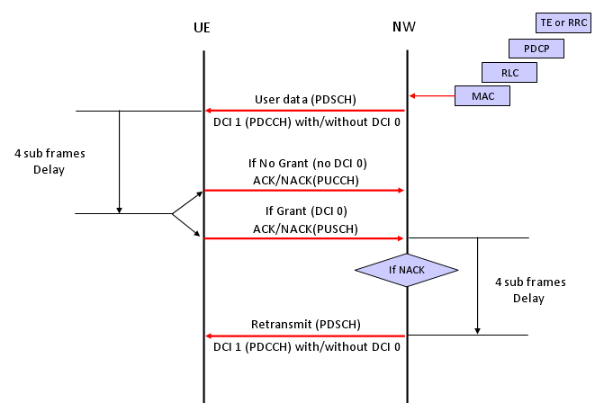

|
LTE Basic Procedure Go Back To Index Home : www.sharetechnote.com |
|
|
Downlink Data Transmission Process (HARQ ACK/NACK)
i) Network High Layer ( RRC or TE) -> Lower Layer : Transmit the data toward the lower layer. ii) Network -> UE : Transmit the data via PDSCH iii) UE receive PDSCH data iv) UE checks CRC error for the PDSCH data v) Now we have two cases at this point, a) If UE has some data to transmit to the network, UE send the result of CRC check(ACK/NACK) via PUSCH b) If UE does not have any data to transmit to the network, UE sends the result CRC check via PUCCH vi) Network receives CRC check result from UE and do one of the following steps. a) If it receives ACK, Network transmit the next data (new data) b) If it receives NACK, Network HARQ process retransmit the exisiting data (with different revision)

|